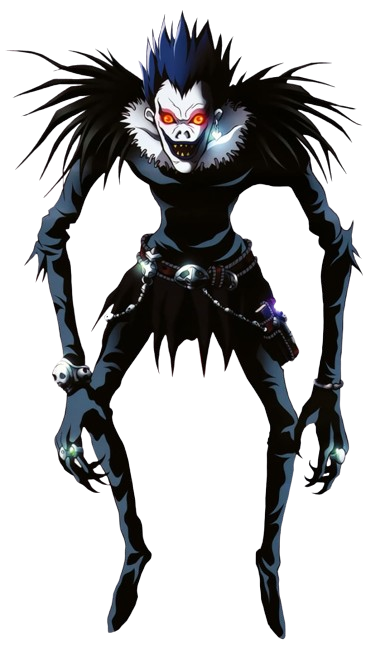
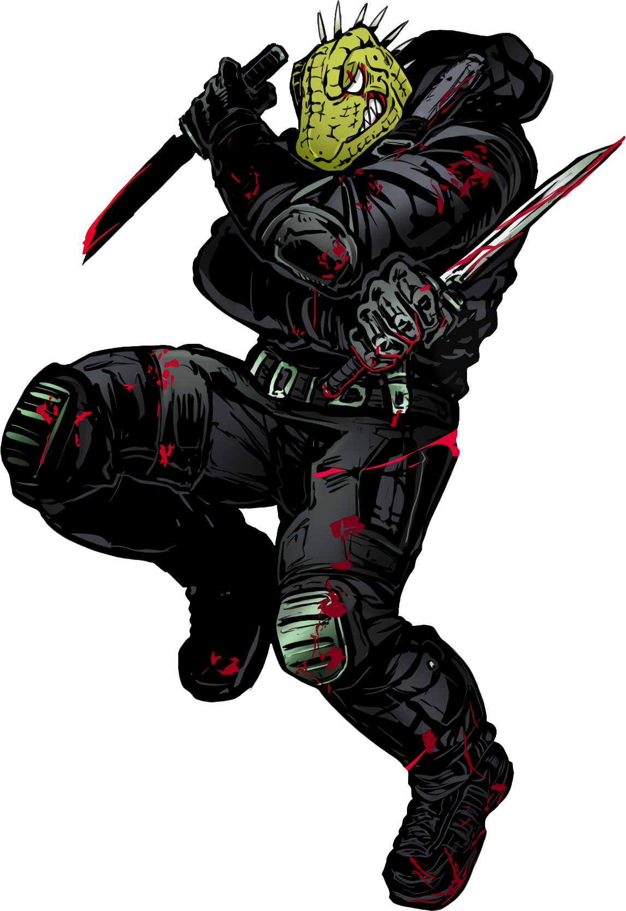
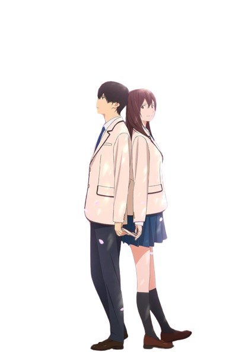
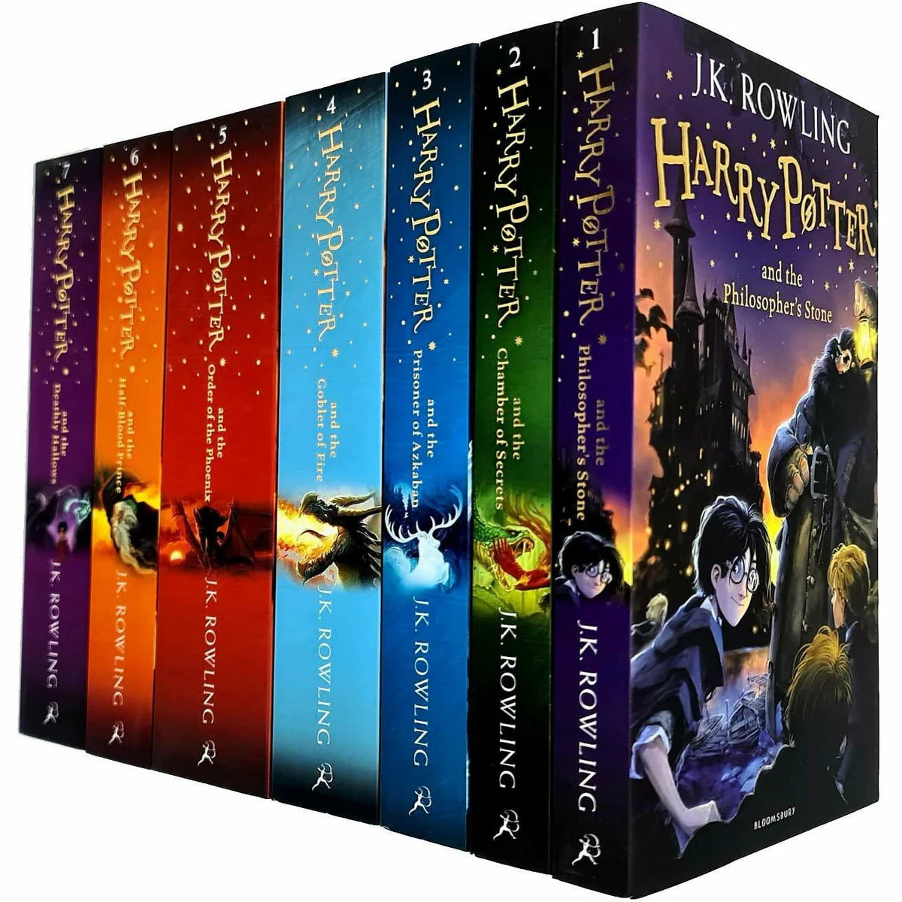
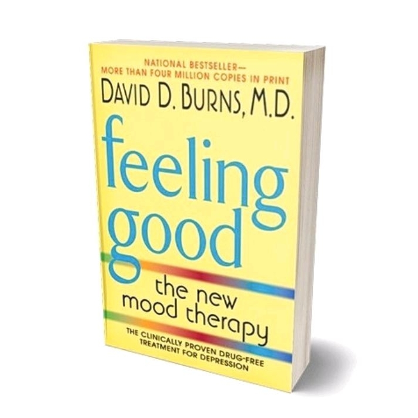
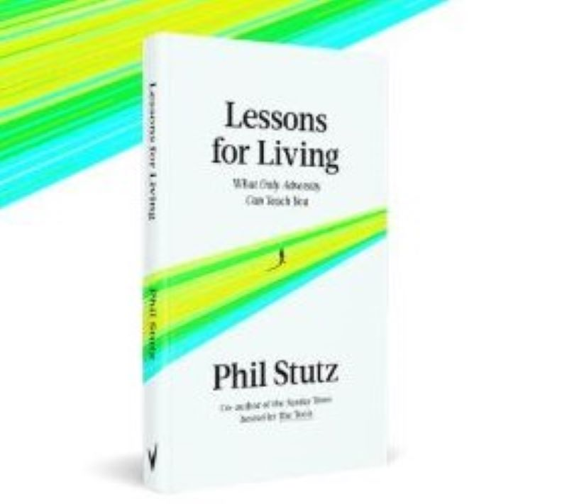
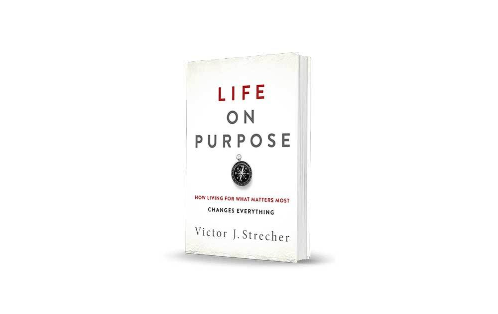
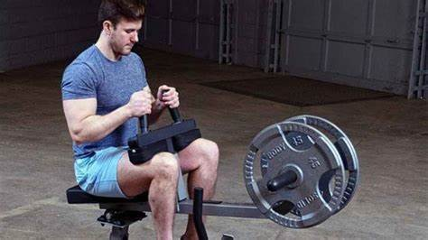

Soooo, where do I even start? Oh, hey there! Name's Yu Zhao, call me Tom though. My life is pretty much the same as everybody else.
I love playing video games, practicing music (guitar) and LOVE Anime (yes, capita- lization because it is superior).
Another thing, cats and dogs...yah, as you can see, I am obsessed with them. My socials are filled with them and I want one SO BAD.
Anyways, I am currently a College student in Barrie, Canada and I'm taking Computer Programming, unfortunately.
Jokes aside, CMPA is starting to catch onto me and I don't mind it. There's so much more to explore in this field and I'm ready
to experience every part of it. Anyways, more on that later. Since you've finished reading this piece of text fellow human, go on
and read more about my life in full.
Sweet Teenage Years
Why sweet, you may ask? Hmmmm, I'm not too sure either. The vague memories of my past are all ripped in half and discarded
in a unused section of my brain. All I remember is it consisted mostly of nostalgic and happy memories. Let's dive deeper
into my teenage life, starting with my childhood.
This is probably going to be the shortest part of content of my life
because I barely remember my childhood, which kinda sounds terrible, but I do recall a few that I hold dear in my heart.
I was born in Beijing China on the 28th of May 2005. The city always had dazzling sunshine and daisies blooming out of the
grass on sidewalks. During summer, it was the perfect time of season to go out and picnic. Although not many bits of memories
left of my childhood in China, I still and will always remember the welcoming sunlight in Beijing.
I attended kindergarten there and boy oh boy was it my favorite part of my childhood. I always had a bright smile on my face
when mom took me to kindergarten. Every single day, I yearned to go to kindergarten. Now I'm not entirely sure if that was
because of the teachings there or just the environment. All in all, I loved kindergarten. I attended kindergarten for a few
years (most likely 3) and moved out to the Philippines.
The Philippines, oh boy, that was a whole new world for me. It's like someone sprinkled pepper into my life omelette—totally
unexpected, but hey, it adds flavor, right? So why the move? Well, mom and dad had their reasons. First off, they wanted me
to get a taste of an English-speaking environment for education. And second, dad had this brilliant idea to bring some Chinese
culinary magic to the locals with a little restaurant venture.
Now, let me tell you about the Philippines in a nutshell: suburban vibes all the way. It wasn't as flashy as China, but it had
its own charm. But here's the kicker: the rain. Forget sunny days; we were more accustomed to floods and typhoons crashing our
parties. And of course, when those storms hit, our house turned into a leaky sieve, usually right around midnight. Thanks,
nature!
So there I was, a wide-eyed 7-year-old landing in Angeles City, Pampanga. School? Yeah, it was nerve-wracking at first, but
I eventually got into the groove. Made some buddies along the way, even tried picking up their language—emphasis on "tried."
Five years flew by, and now, onto the next adventure: Chapter Three.
So, guess where I ended up for my third chapter? Dubai, UAE. Yah, that place where the sun greets you by scorching your skin.
It's like the oven's set to 'extra crispy' mode all year round. Summers? Don't even get me started! They're like trying to
walk on hot coals without the fun part. Rain? What's that? We had to schedule it like some VIP event, and even then, it barely
showed up. Dubai's all desert, but hey, it's got character.
School was... well, it had its moments. You ever dealt with bullies? Not the 'give me your lunch money' type, but the 'mess
with your head' kind. Yeah, that was high school for me. But hey, tough times, right? They're like that friend who's rough
around the edges but teaches you the most. As Einstein said, "Adversity introduces a man to himself." So, cheers to those
jerks for helping me find my backbone.
Oh, and guess what? Dad decided I should learn computer stuff. At first, I was like, "Ugh, why?" But turns out, it's not as
boring as I thought. So here we are, on this wild ride called life. Ready for whatever's next!



Holy f***, this anime just broke my mind honestly. First of all, the fact that I even watched it is insane,
I’m a person that rarely watches old anime series and only because I grew up watching the newer selections of anime
like AOT, SAO, MHA, Demon Slayer, that sort of stuff. It would be hard to enjoy an old anime series keeping that in mind.
Anyways, Death Note is one of my favorites now because of how it started and ended. I will be honest though; the first
half was way better than the second half. Theres just so many parts of this series that keeps a person clinging onto the
anime waiting for what’s about to happen next. I would’ve never thought I would be so interested in a detective movie,
but the vibes Death Note gives off with its smart moves and critical thinking of characters just blows my mind. The
acting of the main character was spot on and kept me interested in the setting more and more.
The personalities of each
character were varied but at the same time all made sense. Each part of Death Note had a puzzle that fit right into a
whole set of puzzles. The ending was the craziest part, I did not expect Matsuda to be the one to end it all. It was a
great anime and only took my 2 weeks to finish it up even when I barely had time. Worth watching if you haven’t.
What can I say about Dorohedoro hmmmm? It was a great show and I was locked in on the show the whole entire time.
The story, setting, characters and the animation style, literally similar to Kengan Ashura was so cool. I love and hate
the cliffhanger this show is putting me through. Glad that I didn’t watch it when it came out, apparently the next season
is coming out soon this year, can’t wait to watch that. Hopefully Caiman gets his face back lol.
Amazing story though,
like seriously, everything about each episode just gives me interest towards it and each part of the story fits perfectly
into the other parts. At first, I was reluctant to resume this show (I watched a single episode a few years back) and just
wanted to get it over with, but the deeper you delve into the background of the show, it really just brings out more of its flavor.
It doesn’t look like much at first, and it was a pretty weird show for sure, but the more weirder it gets, the better somehow.
You sort of get addicted to the type of logic and nature the show has and want to know more about each character and concepts.
Another great aspect the show incorporated was how they laid out and organized each piece of backstory for each character.
It never collided with one another and never overloaded the audience with more than needed information, it was put into place
perfectly allowing the audience to properly digest the mass amount of new key information before introducing another one. The
way it was structured is phenomenal and earns my respect.
Definitely would start watching more shows with this type of animation
style too, instead of the normal animations of shows like every other show, this one just brings out a bit more interest in me and
allows me to question it whilst maintaining my regard to the show. Each character had their own unique personalities which created
a more dense but fascinating environment for the show. All in all, it was a show I definitely enjoyed and did not expect to,
I would rate this an 8/10 surprisingly. I wouldn’t watch it again however, but still, a great show to add to my list. Excited
for the second season for sure.
This movie had my heart all in pieces. In different emotions and feelings each piece. I cannot describe this movie into words.
It was sensational watching the main protagonist being able to alter reality with the firework ball so fate ends up with
Norimichi and Nazuna together. It sort of implies that your in control of your own story’s ending. No matter what events take
place, you’ll always have a way to change the route your life ends up taking.
I love the music, the animation, and the visual
effects and real-life like behaviour of each character and setting. This movie has me with a big smile on my face. It was not
overpowering, just the right touch of sweet. I rate this movie a 8 out of 10. It was worth watching and I would watch it from
time to time again.
This movie went crazy though. I definitely did not expect the stories ending and how Sakura died in the end.
The fact that she didn’t perish from her own inescapable disease is crazy. I loved the way they portrayed the
two main characters’ personalities. One was all happy and joyous all the time and the other just didn’t seem
to care. But on the other side of the story, it was the exact opposite.
Sakura had her own tough times where
she cries in her bed alone at night and Haruki cared a lot about her but didn’t want to hurt himself in the
process when she leaves the face of the planet. I would say this is one of the best drama/rom-com movies out
there and is worth giving it a chance. Another thing about it and other similar movies, they always gotta have
them fireworks. The animation of them go crazyyyyyy.
I’ve got mixed feelings about this movie. The ending was pretty sad though and I definitely shared some emotions
such as helplessness and the idea of giving up in a world where death is inevitable and has no meaning. It was
really cool seeing this story talked through the God of Play, Teo. The theme love was portrayed smoothly throughout
the story and it showed that love is all so powerful and grants you access to emotions you’ve never explored like
wanting to die for your partner. The feelings of Riku I can totally understand, after failing several times, having
to force your comrades to accept death, and then going through love and death of your partner in a couple of days is
something unbearable especially for a human being.
I was hooked throughout the movie, the colors, styles and gradient
kept me interested in the story. I wouldn’t watch this again however, just because I was pretty disappointed on the fact
that Sora and Shiro only appeared for 3 minutes at the end. Ehhh, it’s a movie after all, can’t really complain. I do
prefer the first season more than this respectfully, but this movie does have its own ups that I appreciate. Give this
a try and see how it fits your taste buds.
Now where do I begin with this masterpiece. I call this a masterpiece simply because of the sound effects. The sound
effects of slime is similar to that of Fire Force, which is by far one of my most favorite animes, from its openings
to its fighting animations. Slime is similar and has a cliché but favorable overpowering main character energy which
I love. It sort of reminds me of Solo Leveling when Sung Jin Woo acquired the Shadow Monarch title and went nuts with
it creating a whole ass army.
Slime is sort of like that, but you get a more friendly but strong af team of different
creatures. From orcs to ogres to elves and demon lords. This movie had a pretty good story and flow and was about
Benimaru’s long lost brother named Hiiro mainly. The villain was a bit disappointing, but I do understand since there
wasn’t much room to expand on. It was still nonetheless fun to watch the villain get beaten up to a pulp. I would give
this movie a solid 7 out of 10.
Vinland Saga is hands down one of the best anime I’ve watched ever. I remember when I was just a kid, I would despise
learning history. This anime was a way of depicting how beautiful history really is. Each character had its own role to
play in the anime. One of my favorite characters was Askeladd. He was a great leader of his men, but his past also had a
unexpected backstory to it. At the start, Askeladd seemed like the main antagonist, he beat Thorfinn to a pulp multiple
times when he was a kid, had remorse to keep him as one of him men, and used him to beat Thorkell. This anime really just
asks you a question of “What is a warrior?”. Is it being able to beat everyone you can and destroy them? Or is it being
able to have the mentality of a God and self control that allows you to evolve as a warrior.
For example, at one point of
the story, Askeladd was awake at his bed at night, Thorfinn was outside having the full opportunity to assassinate him but
decided not to. It really shows that to be a warrior, you can’t really cheat your way through something. The death of Thors
was done in a dishonourable way. Askellad took Thorfinn hostage and resulted in Thors giving up the fight.
This anime really
shows the difference between two men, one that’s a warrior and one that’s not. Thorfinn rejected the offer to assassinate
Askeladd while he was asleep because this would disprove his fathers teachings. Askeladd was awake at the time, and didn’t
mind dying because he himself knows he isn’t a warrior. He did exactly what Thorfinn didn’t do during his younger ages. But
he had no choice. It was the drive of hatred that lead him. This is exactly why, at the end of the anime, Askeladd wished
Thorfinn would go beyond what his father had achieved.
This anime is just great. I can’t even describe how shocked I am at
how this first season ended. Just imagine having a goal in mind, one that you’ve been working on for years, if not decades,
and suddenly the thought of this goal just dissipates into thin air. And you have no chance of following through to that goal
anymore. That is how Thorfinn felt. He had no goal in mind after his father Thors died, all he wanted to achieve was the death
by his own hands of Askeladd. Now that Askeladd died, what shall Thorfinn do? I can’t wait to find out. I rate this anime an 8/10.
After pausing this show for a year or so due to studies and what not, I have returned to watch the second half of the first
season of this show. Spy x Family in my opinion, is a pretty chill and comedic show where everything seems childish-like and
kid friendly, but a deeper and darker truth comes to light. The fact that Loid is a secret spy agent, Yor is an assassin, and
Anya is a telepath (who was a kid picked up from adoption), and the fact that none of them had revealed to each other that secret
is a difficult job to maintain as an anime producer. It’s so interesting and surprising how the producers kept the show running
in a maintained and organized manner, having each episode have a proper storyline, and at the same time not ruining the big story
behind all that.
I love how the idea of family and its complicated problems are being presented in this film. Both Loid, Yor, and
Anya all do not know how to perfect their role in the family. It just goes to show that starting up and maintaining a family is
most of the time difficult or simple but can have its unprecedented challenges. Others would talk behind your back, problems with
teaching a child can arise, and different other issues. Another great thing about this anime is how the side characters are
portrayed. I love how each of them had a specific role even if it was just for a few seconds.
For example, at episode 11, the old
lady at the drink shop was revealed to be part of the WISE group and helped with handing outside missions for Loid to deal with.
Other side characters like the neighbors of the Forger’s apartment also brought a bit of content to the film. They were there to
raise questions of how Loid was acting as a father and a husband which brought conflict to the mission, he was to succeed in.
It’s
great how the artist did not forget about a single character in the anime. Not only did he add so much detail to the main
characters’ backgrounds, but he also shed some light to the side characters who don’t appear for long on the screen but acts as a
catalyst towards the show. Unlike most other anime, this show didn’t take much time (a little over a year) to release the next
season. It is an anime that I can watch while relaxing since not much information and attentivity is needed to watch this. I rate
this anime a solid 8/10.
This was one of them shows that just really packs a punch in a few episodes. The ending was sad as hell. David already knew his
fate as soon as he chose the cyberpunk road. When David joined Maine and his team, it was such a good part of the story. David
found actual friends who would do stuff with him together. Then each one of them just started falling like flys. Another thing is
Lucy and David’s relationship was just so perfect. David just really wanted to protect Lucy and make her dream of visiting the
moon a reality. This anime is such a banger. The story and plot is so simplistic but the more you think about it, the more info
you get from it. I guess it’s just a short film. Definitely wont be having a second season though. And another cool thing is that
this anime is based off of cyberpunk 2077 and yes I have played the game a little bit.
I see a lot of resemblances from the game
like the holograms of the goldfish and the settings like night city. Different implants that are similar to ones in game and
the maxtac. Pretty good anime though. Would give this anime a 7 out of 10 just because the story was a bit rushed in my
opinion. It had way too much information. I barely understood much of the characters and antagonists. But it kinda makes sense
in a way. Maybe they’ve done this on purpose too. Who knows? Great show though.
Goddamn was that an amazing season for Demon Slayer. Especially that last part with Muzan entering the area with 9999 animations
put on each step on the ground. It was crazy how he was portrayed as a villainous and eerie character so much that his appearance
would bring almost anyone to straight fear. Unexpectedly though, the person he was facing Ubuyashiki, sat there on his death bed,
having absolutely no fear, AND NO HATRED FOR MY MAN MUZAN. Like how kind do you have to be to have no resentment to someone who
was born a thousand years ago into your bloodline and has just been bringing death, sickness, and bad luck to you family and
ancestors.
I definitely did not expect how it went down with the explosives. Took me a minute to register that that wasn’t even
Muzan’s ability, it was straight up set by Ubuyashiki, even them Hashiras didn’t know about that. When I say Muzan blown away
with his flesh tearing away, I was thinking why he would do that to himself just to kill Ubuyashiki, but then it registered
to me, leaving me shocked. Enough about the last episode, this Hashira Training Arc was pretty mid, but it acted as a
refresher and a bridge to the next arc, the Infinity Castle Arc.
Lots of comedy and funny moments in the anime, as well as
character development from my boy Zenitsu for sure. He upgraded so much compared to when we first saw him in this anime.
He’s made up his mind on what he wants to do. Definitely tired of being below everyone else beside him. It was nice how we
got to see more of the Hashiras in action and especially the backstory of Giyomei. It just shows, sometimes kindness can
lead you down some deep ass rabbit holes that you almost can’t recover from. Luckily, he was saved by Ubuyashiki. Overall,
this anime was really short, I mean 8 episodes is crazy. But they did make up for a bit of that by having 2 of the last
episodes to be longer in length. I hope they make up more for that by dropping the next season soon. This anime gets an 7/10
for me.
This has to be one of the coolest anime out there. I did not expect to enjoy an anime about Kaiju. I was expecting mid-level story
and fighting because I thought it would only be about people fighting Kaiju with weapons and stuff. But the fact that Hibino
Kafka, the main character, just inhaled a Kaiju and got its powers is crazy. I love how the captain and vice captain have
different weapons. The captain has a giant laser beam gun, and the vice captain has a double-wielded purple sword. I love the
idea of using your strength to charge up your armor and weapon strength.
The characters are all well designed with their own
unique personalities, and the anime has a bunch of comedic scenes. Another thing about this anime is the ending song. It’s so
good I literally am trying to learn it on guitar. It’s by One Republic and has got a catchy beat to it. Something that I wouldn’t
skip in every episode. The Kaiju designs are sick too, especially the ones that are higher up in the calamity level. They have
the ability to talk and act like humans which is crazy. And I like how instead of it just being a regular Kaiju anime, it
changes it a bit. Like for example, Kaiju aren’t killed by slicing their heads off, but instead, they have cores located in a
part of their body which must be destroyed. Very interesting anime, I rate it an 8/10. Excited for the second season.
Gosh. Where do I even begin with this masterpiece. First of all, it reminds me of a couple of anime I have indulged in previously
such as: Sword Art Online (SAO), That time I got reincarnated as a slime and a bit of that solo leveling. The art and animation
style is off the charts too. It really seems to convey the message of “I can go crazy but Imma lay off and give you the minimum to
satisfy”. I guess what I mean is that Shangri-la Frontier exceeded my expectations without going overboard.
The story and characters were attention-grabbing and made me finish the anime in 3 sittings. The story about a guy named Hizutome
who loves playing trash games, games that would have several bugs and a low fanbase, suddenly decides to hop on a game played by
30 million people, considered to be god-tier, recommended by the lady who sells games. It also mixes the one sided relationship
between Saiga and Hizutome smoothly. Incorporating different scenes where Saiga perfectly blends into the story. Another one of
the characters I think is cool is Oikatzo, who’s real name is Kazuo. Him and Hizutome have been pretty much rivals who work
together and play other trash games together. And the third character in the main arc was Arthur Pencilgon. In your mind, this
name probably might pop up a guy into your head, but surprisingly, it is the name of a lady playing named Amane. These three
rallied up mid-way into the anime to defeat one of the Seven Colossi, Wethermon the Tombguard. Basically these Seven Colossi are
unique monsters in the VR MMO game Shangri-la Frontier and are considered powerful. But yah, they pretty much defeated it through
lots of revival items and some stat boosting items and managed to put Wethermon to rest.
Anyways, the lore in this anime is really interesting. It’s just like SAO in the fact that it mainly focuses on the game’s story,
but you also have each main players’ real life hovering in the back of your mind, occasionally springing up questions. We know
pretty much a pinch of what each players’ lives are like. And yah, the monsters’ designs in this anime are sick too. They all have
miniscule details that would make sense for each. Very excited for the second season of this anime. Can’t wait to see what
adventures lie ahead.
00:08—a brief 8-second moment of a character drawn out and expanded into a 5-minute film. This animated video is perhaps the most
overwhelming (in a surprisingly nonchalant way) piece I have ever watched. It is captivating in several ways, from the vast ideas
of the mind to the creativity of the producer. The music, art, and transitions from each piece of art to the next are
mind-blowing. To me, this artwork represents the enormous capabilities of the human mind. A simple sip of tea or coffee can lead
you to think up things you would’ve never imagined or something entirely unexpected. The music transitions from a slow-paced,
calm, and smooth tune to a hurried and tension-building one.
It may seem a little random to most people, but this film describes
a lot of things. It can be portrayed in several ways that might not seem relevant at first but can soon leave a huge impact on
your thoughts. It’s amazing to see that art like this still exists, unplagued by our generation. Although it was released quite
a while back, I am thankful to have indulged in this 5-minute feast for the eyes. I would highly recommend people watch it, as
it’s so short. However, it may not be suitable for those with epilepsy.
Bro what the hell did I just watch. I’ve got no words. I can’t even decide whether to place it up high on the ratings or low.
Honestly, I was expecting some mid-level writing and story-line, but in the end, it all kinda added up together and made sense
in my head. I mean the ending was just brutal. I’m still thinking about it even now weeks after watching it. The scene just
keeps replaying, like some sort of gruesome nightmare.
The story is pretty simple with a main character trying to convince
people that his kind ain’t evil. You get the idea. Average story writing. The art style though, I think this was one of my
first anime I’ve watched with that type of goofy but unique art style. Kinda eerie as well. Like the smiles of characters
just haunts me a bit whenever I stare at them. Like they could turn into a sludge of slime at any given moment. Not sure
where I saw that type of scary looking animation before. I mean it’s not scary, just unusual. One thing I did find really
funny was the movements of characters in the series. Especially the ones who were devilman and ran like crazy. The ending was
definitely a bit incomprehensive and confusing.
Maybe I’m just too lightminded to understand the deep lore behind this series.
But it honestly just felt so rushed as well. I would compare it to Cyberpunk Edgerunners because of the number of episodes as
well as the story telling. Everything to me just seemed rushed and I was not given time to understand everything. Like they
should’ve adapted the characters’ backstories more. All I know is that the main character Akira lives with his uncle and aunt
with their family cuz his own was in another country doing some work. High school boy who runs track a bit alongside his cousin
Miki who is actually a professional track runner.
And alongside that we have Ryo, who at the start was portrayed as a scientist
who investigated the birth of Devilman but later just turned out to be Satan himself. Like I need some backstory to this guy man.
Like where did he come from, what was his plan and why did he want all this to happen. The things at the Sabbath, summonings,
him knowing Akira. Like howwwww. So yah, I rate this a 7/10. It could’ve been better with more episodes just like Cyberpunk.
But I did enjoy the settings a bit and the action of fights. Animation was new for me but I could grow to like it. Very eerie
though. Scary. Spooky.
Goddamn man, this season of MHA really had me in tears. Broke me down into pieces honestly. I think I cried a total of 3 times
which is a lot considering I didn’t even cry when I watched Grave of the Fireflies for the first time. I’m currently about to
watch episode 20/21 of the season but just wanted to pop in to talk about the Toya fight. Man I just feel bad for everyone in
Todoroki’s family. Dabi really still had that bit of human inside of him and wanted to be good but just couldn’t help but feel
sad about how Endeavor neglected him during his childhood.
I just started balling my eyes out when Endeavor was trying his best
to stop Toya despite maybe dying from the massive explosion that was about to escape Dabi’s chest. And then Rei (the mom of the
family) came in to try to help cool him down. Alongside her, Natsuo and Fuyumi came in as well to try cooling him down even while
enduring the burns from the high temperature of Dabi’s flames. Man this shit had me in tears. Just seeing how helpless their
family is and how they were all trying to comfort Toya and make him come back. Endeavor kept apologizing as well because of the
failure he had done to create Dabi. That part was devastating man.
Let me talk about some of the other fight scenes of this season as well. Oh gosh Bakugo fighting Shigaraki was peak. I did not
expect him to go basically super Saiyan. I’m pretty sad that Bakugo is no longer with us however. But maybe Edgeshot can just
save him and merge together. I really do not want this cool dude to just die like that man. It’s so crazy how we see a personality
switch in Bakugo. We see that he was actually a huge fan of All Might and just wanted an autograph. His bratty personality doesn’t
showcase his actual feelings deep inside.
I was kinda disappointed as well when Present Mic (Yamada) messed up while guarding
Kurogiri. Man he defeated Iguchi and all with his voice but then just didn’t take away that stupid hand of Shigaraki and that
mp3 player for All for One’s voice. I was legit screaming for him to take that shit away before doing anything. But no, this guy
gets in his feelings thinking about his old school mate who’s actually Kurogiri and just messes up cuz Iguchi wakes up and
puts the hand to Kurogiri’s face, awakening him in the process. Like bro, how can you be so stupid to not get rid of those two
first. What was this guy doing just standing around.
Ugh, I have finished the whole series now. I did not expect it to end like that. I expected some sort of hour long episode for
the finale. But no, it doesn’t even end yet. The final season is coming out on 2025. I CANT WAIT GODDAMNIT. But damn, I didn’t
expect All Might to have that armor suit on the ready to be used. I thought he would’ve been fucked when All for One came in
charging at him, but yah. Both Midoriya and All Might are fighting their best. Oh and the Uraraka vs Himiko was pretty good. It
just goes to show that every single villain has some human in them that wanted to do good. They were however just shunned away
by society somehow.
Just like the heteromorphs who were protesting and fighting back because they weren’t accepted cuz of their
looks. I’m not sure about the All for One backstory. Maybe All for One just doesn’t give a shit about humans and actually have
no human left in him. I’m sure Shigaraki does have some human instinct in him as shown in the series. But damn, this whole series
was peak. It was filled with fighting and emotional scenes that made me ball my eyes out. W Anime Series. But come on, you really
end it like that? Now I gotta wait for months again lol. I’m rating this a 9/10 because of how good it was.
Damn this show was good. My friend suggested me to watch Noragami or when he implicitly hinted that it was so crazy I haven’t
watched that yet. He told me it was a good show and that I should try watching it. At first, I did not trust that because of the
things he loves to watch. We both have different likings in anime. Some of the shows I loved, he says is garbage, and vice versa.
So of course, I had low expectations for this anime.
But when I first started watching it, it kinda latched onto me. I loved the story. It was so simplistic and almost predictable.
But not so much as to ruin the experience. It just had its own way of showcasing the characters which I loved. It kind of reminded
me of Shangri-la frontier and Bleach. The former because of the main character playing shit games and for Noragami, it wasn’t
games, it was just the fact that he himself was a shit God that nobody cared about. With Bleach, it had almost an identical
resemblance to both the characters and plot. In Bleach, the main character Ichigo Kurosaki heads on adventures with the main
female character (I forgot her name), who is a normal human just like Hiyori. And the sword that Ichigo uses is similar to the
Regalia of Yato, Yukine in Noragami.
Another thing I was surprised about when watching this series was that I actually got sad with a part in this and cried which is
VERY rare. I did not even cry in Grave of the Fireflies but cried in this. It happened when the part where Yukine was getting the
phantoms in him exorcised and he became a good Regalia again. I got so sad because I thought he was gonna have to die. But when it
all died down and they were all fine, I was super sad and cried. The fact that all he ever wanted was friends to hang out with
and do mundane things with was sad as well. The reason for Yukine’s death has not been revealed yet but I hope to know how he
died and how he never got to experience a normal childhood like normal highschoolers do.
And the villains in this first season were pretty good. It connected to a lot of just more story; backstory. Not much of the
backstory was revealed in this first season, but I would say it definitely set a clear standard for the second season. I hope
that the second season (which I am about to start now) is just as fulfilling as the first season. Otherwise, I will be very much
disappointed and upset just like with The Promised Neverland series. But yah, this series is pretty good, maybe my trust in
suggestions from my friend have grown. I rate this an 8/10 for this season.
I enjoyed this season of Tensura (That Time I Got Reincarnated as a Slime). It was filled with action and the story line was
decent. The Seven Day Clergy fight was pretty sick as well. Rimuru against Hinata was long too. And we got to see more about the
main villain behind all of this and how they are all connected. There was more information about the Rosso family and the main
villain Mariabell. Rimuru was also smart enough to figure out the Yuuki was connected to all of this too. I was kinda confused
during the festival when Yuuki was present and acted normal and friendly with everyone because of the things he does or plans
to do when not around Rimuru.
I am a bit disappointed that Rimuru hasn’t fought much in this season. The only fight he had was
with Hinata, other than that, barely any appearances from him. Hopefully the next season would be more action-packed. The last
half of this season was just mainly about the festival and making pacts with other nations like the Thalion nation and the
Tengu. We find out that Momiji was actually the daughter of Hakurou and a lady from the Tengu clan that he used to train.
Other
than that, the Lightspeed Hero Masayuki was just a joke. Literally. His skill is a joke and his allies and fans are all a joke
too. He knows this as well. Can’t fight for shit. It was funny watching him but also irritating to see everyone else bow to him.
Carion fighting was pretty sick. Him with his animal skills. Other than that, this season was pretty average. I liked the previous
ones more as it had more fighting. This one was more of a build up to the upcoming season bringing it some suspicions and hype.
I’m definitely excited to see the next season of this. 8/10 for me.
This anime really gave me a feeling of euphoria. Bofurin was portrayed as a strong and persistent team who cared about everyone
around them, even their enemies. This anime kinda reminded me of Tokyo Revengers but more friendly in a way. The theme was mostly
action and fighting which I really enjoyed. The animation styles were simple but attractive at the same time. One quote that I
think represented this anime is “Love your enemies because they bring out the best in you” – Friedrich Nietzsche. It’s amazing
how creative the studios were when coming up with different traits for each character. You got Nirei who’s a book worm, Sakura
who is shy but has good intentions (almost like Bakugo from Boku no Hero Academia), and you got other characters like Umemiya
who unexpectedly has a huge interest in plants and Mitsuki who’s just popular with women.
And another thing I really liked about
the anime was the character appearances. Each character had a unique style and you could almost predict what kind of personality
that person would have. The ending episode had a good cliffhanger foreshadowing the fight between KEEL and Bofurin. I’m looking
forward to the plot of that and how everything turns out. I hope the anime grants more screen time for some strong characters and
we get to not only delve deeper into the characters we’ve already seen but more on the side characters. Overall, this anime gets
a solid 8/10 and I am excited to watch the 2nd season of this.
Definitely worth watching Kimi No Wa. I understand the hype about this movie now. What’s crazy to me is not even the compelling
story or the plot, but the fact that this was released almost a decade ago on 2015 is what’s crazy. The art and animation of the
scenery were just beautiful. Everytime I saw a scene that had that beautiful scenery, it just captured my eyes completely for a
few seconds. This has got to be one of my favorite romance and fantasy films out there. It’s definitely comparable to “A Silent
Voice”. That one was also a banger film. But this one is just really good as well.
I remember the plot about this film like a few years back when it was really popular. The plot is about a girl named Mitsuha and
a boy named Taki who switched bodies. They have a 3 years difference exactly when a comet hit the town of Mitsuha. Through a bunch
of body switchings, they ended up knowing everything about each other and Taki went to visit the place Mitsuha lived in. The
place however, was just a hole with no town. Taki then decides to go back again and try to save them from dying to the comet. It’s
such a crazy story to have that happen in the first place.
This film is kinda saying, whatever chance you get in anything that you do, you should take it almost all the time because it
would lead to good things. Confidence is a key point in this film. They both knew that it was an important part of their life that
they had to go ahead and reach out to. I mean if it wasn’t, both of them would not even give a crap about it. Convince themselves
it’s a dream and that’s it. But they both were confident enough to reach out to that little light at the end of the tunnel and see
what is up.
Another thing about this film was the music. Of course I’ve heard of the most popular one. But the other ones were pretty good
too. I was reading the lyrics in English at the top right while the music was playing and reading the subtitles at the same time.
The songs have a really relatable meaning to the movie. I loved it. This was definitely a good film to watch. I give this a 9/10
which is pretty darn good.
🎶 Rhythm Realm 🎸
Music is something I will always hold close to my heart. It brings me a sense of melancholy whenever I hear it and lifts my
mood up. From the first ever time my fingers laid on the keys of a piano, to the time where my finger nails strummed the
strings of a guitar. All these times brought me joy, enough to make me forget the adversities I was currently dealing with.
Whether it'd be upcoming exams or even family problems, music dealt with it sort of like a drug. It didn't cure the pain, only
made it vague enough for my brain to disregard it as a mental obstacle.
I played music for a third of my life now and have
learned so much things you would not find in the music realm. Music to me is like sunscreen on a hot beach day, it helps cope
with the sunlight for a bit, eases your mind, and keeps your skin comfortable (don't ask me why I used that as reference). The
first musical equipment I became competent on was piano (this was in the Philippines). Having asian parents, that decision was
not my own choice but the choice of my parents. Although frustrated and annoyed at first, it turned out to be one of the
biggest pieces of puzzle in my life. It fit right into my teenage years and helped me adjust to difficult times. I was tutored
as a kid when I was around 9 years old for about a year. Trust me, when you learn a musical instrument, you should never let
it go. The melody of the music you play that you learned brings you a different part of joy that is indescribable by other
hobbies you may do.
The second time I held an instrument was when I got to Dubai, it has been about 3-4 years since I've played
instruments and had become rusty. Again, I was encouraged by my parents to learn a new instrument, this time the guitar.
History repeated itself and I found the true satisfaction through learning fingerstyle in guitar. Both these times, I
couldn't help but settle into the calm void music provided for me. Music really brought me some good times. Music is my muse.
Below are some of the piano and guitar songs that mentally embraces me like a warm hug.
Chopin - Nocturne in E-Flat Major (Op. 9 No. 2)
Kotaro Oshio - Twilight
Hip-Hop, or some people and I would personally call it Rap, is my go-to music category of choice wherever. Whether it'd be
in school, when I'm grocery shopping, or just strolling about in the city of Barrie, I always look forward to listening
to music. Most of the time, depending on the albums or song of choice, I would listen to it multiple times on repeat and
would not get tired of it. The main thing I love about Rap is the story behind it and how Rappers come up with their
respective ideas and flow of style. Each and every song has a meaning behind it which leads to a much more complex and
deep story ususally inspired from real-life incidents. The artists I listen to all have a great passion for music and show
it in each song of theirs. It may seem like sex, money, murder and drugs.
But behind all that, is a whole other meaning.
An example would be Juice Wrld, one of my most favorite artists who passed away in the year 2019. In his songs, he would
always bring up drugs and talk about a certain "someone" and it may seem like he's just a psychopath addicted to drugs
and women, but upon further inspection and research of his life, he takes these drugs as a coping mechanism through mental
challenges. And this certain "someone" only used him for his fame and the luxury of his money. Each and every lyric of
Rap songs combines a mix of ego but at the same time bringing in true facts. That is what I love about Rap.
Polo G - Rapstar
Polo G - Be Something (feat. Lil Baby)
Pop is a category of music I associate myself mainly with as well. It's something I would listen to when I wanna jump
around and bump to some beat songs. I ususally listen to people like The Kid Laroi, The Weeknd, sometimes Bruno Mars.
These type of artists gives you a lift up on your mood and lets you sway around dancing, not caring about a thing. That's
one of the cool things about music, there are no restrictions. Whatever you feel like, you do it. Sometimes, pop music
allows me to recollect my thoughts and to focus on my mind. For others, it may distract, but for me, it actually allows me
to think properly and to go through a sequence of steps more naturally. It calms my nerves down and gives my brain time
and room for though processing. Though I listen to Pop not as much as Rap, it is still a part of music I will always
accept and include in my life.
📚 Novel Nest 🕊️
What can I say about reading? Well, for starters, reading is in my opinion, one of the best investments that can be
considered a leisure activity as well. I can say a lot of pros about books in general. The smell of the wood from the
book, the different contents and chapters in the book. Sometimes I would even get so invested into a book, blazing through
each chapter, that I would completely forget about day-to-day activities like eating. Mom would call me for dinner and
I’d just be begging her to let me finish another chapter of Harry Potter.
It does sound lame and boring to just browse through each line of the page and analyze and comprehend each word of the
sentence. But the more you get into reading, the more addictive you will get (not in a bad way). Most of my life, the
books I’ve read consist of fiction. Now fiction, oh man is it such a good genre of books. To me, fiction can really change
the perception of the world. It is fiction for sure, but the amount of critical thinking and imagination you can build
from it is insane.
At the start of your journey to read books, it will definitely seem hard to understand the joy of reading. You wouldn’t be
able to grasp the plot and be able to picture the settings and characters. But trust me, you keep reading that book maybe
about a few months or so, or less, you will begin to have a greater capacity for your brain to create these picturesque
scenes that you would’ve never thought would be possible. One other thing I can say about books is that you can get so
much out of each from each time you read the same book or series.
For example, I’ve read the Harry Potter series multiple times. About 2-3 times I would say. Each time I read the book, it
uncovers new mysteries and meanings the first or second time wouldn’t register for me. I guess it’s because of the way our
brain works. It’s constantly hungry for new information to store. If you read the same book a second time, the brain will
start hunting for new hidden ideas in the book that you didn’t catch onto the first time. Most people just read the book
and throw it onto the shelf, never to be touched again. And some may even complain about the price of books, when in
reality, they aren’t using it to its full capabilities.
Enough about that, I would say that whenever possible, reading is a great investment to yourself. But remember, do not
read a book while listening to music, especially music with vocals. Music usually deteriorates your mind from the topic of
the book and you sometimes forget which line you were just on, at least for me. Maybe some lofi or calm naturistic music
would work for you. Below are some of the book series I enjoyed reading in my teenage years.

The second type of books that I cannot forget to mention are non-fiction books. Books that are all about facts, the real
world, different lessons to learn. Nothing too crazy right? You could say that. It never crossed my mind during my young
teenage years to even touch a non-fiction book. Like what’s the fun in reading something you already know or experienced.
Wouldn’t you rather read something cool like dragons, knights in shiny armor or magical books that you can envision?
That is indeed true. I would definitely rather read some fiction books personally, but that does not imply that non-fiction
books are completely useless and unworthy to be read. I’ve recently started reading non-fiction books and I’ve noticed
that when reading these books, your attitude towards yourself grows and you bring more focus to you and the world around
you. Sure, you won’t have the amazing and artistic scenes that you yourself create in your mind, but the value of these
non-fiction books can’t go unnoticed.
You learn so much about yourself as a person and the different things you might’ve done wrong up until now and haven’t
noticed. It can be small or big things, but this book really shines light on those things. Another thing someone may
say about non-fiction is “Aren’t each authors perspective different? How do we know which author is right about their
lessons or ideas?” What if we choose the wrong person to believe and end up bad?”. Now that technically isn’t wrong, but
looking at each person and judging them by where they stand is kind of unnecessary. What I’m saying is each authors’
perspectives matter. That is why the more you read non-fiction, the more you understand the world and the people around
you.
You understand multiple perspectives and can reason with them. You’ll start becoming more tolerant to people who you
would’ve punched in the face 2 years back. It’s not about the difference in perspectives, but the diversity in them.
Honestly, it doesn’t matter what book you want to read, just read them. You’ll see a boost in your thinking in just a
few hours of reading. Again, below are some non-fiction books I’ve randomly bought but really helped change my perspective.



🚴 Active Avenues 🛤️
Exercising is one thing that will never part from my life. It is the only thing that, even when lazy, must be done no
matter what. Obviously this doesn’t mean every single day, but I wouldn’t forget about it and would always make it a
priority ASAP. The gym is one of the main reasons I am who I am today. My confidence, ego, commitment, and overall
personality. It really changed my vibe from when I was just getting into high school to now in college.
The main reason I got into the gym was because of a best friend in high school, who sadly I do not see eye to eye anymore.
But he was the main reasons I spiked in confidence and self-love. Actually, scratch that, my dad was the one who put me
into the gym, and this best friend of mine was the one who kept me going. Yah, that’s more like it. My dad randomly decided
to, on Christmas Eve, to give me a present. A gym membership in a local gym just down our apartment building.
At the beginning of this gym era, I had no clue what I was doing, which is honestly most people’s intuition when starting
gym with 0 knowledge. I used every single gym equipment that “looked cool” and did every type of exercise that my eyes see
fit. Most people who have an actual goal in the gym would usually get a personal trainer. I’m glad I didn’t. I learned most
of the concepts and knowledge about the gym from videos online or articles that I would read about. Of course, in a short
span of time, my social media filled with gym/exercise content.
Then when I moved to another place, I had to stop with gym and switch to calisthenics. Calisthenics was my second part of
exercising which I switched to. If you did not know about it, calisthenics is just the gym but using body weight instead
of actual weights. I did calisthenics on and off for a bout 2 to 3 years. Things like pushups, squats, sit-ups, planks,
and so on. I even bought a pull-up bar that was attachable to my door frame. I used to do pull-ups every single day and
would reach up to 15 pull-ups in a row maximum.
Then, I’m pretty sure a friend of mine from high school introduced me to this gym. He was going there for about a year and
told me to come with him for a gym session. After that, I enjoyed the gym but didn’t want to ask my parents for a gym
membership, knowing they would disagree and would prefer I focus on my studies. I ended up going once a week. Typically
every Saturday or Sunday depending on my schedule. I would spend about 20 dirhams (UAE currency) on each day-pass and
workout there. It definitely isn’t that effective, going once a week training maybe 1 or 2 maximum parts, but I enjoyed
every second of it.
Anyways, after that whole arc, I got into year 12 in high school and barely had time to hit the gym anymore. I would maybe
once or twice a month but that was about it. I had my AS Level Exams, which I don’t know if you know about, but is hard
as sh*t. I ended up barely passing and got into college. In the present, I’m currently in college in Canada and am
hitting the gym every 2-3 days usually with a friend. The gym took up so much of my life and had such a huge impact on it.
I can’t thank it enough for the things it has done for me.
A message I would like to share with you reading is just don’t care. Don’t care too much about whoever’s talking behind
your back. It’s not worth the effort and time wasted. Focus on yourself. And if you haven’t been hitting the gym, try it
out. See if it fits your type or style. Maybe go with a friend who is a gym rat and get his/her advice. Even if it isn’t
the gym, any form of exercise (cardio, weights, calisthenics, etc.) can be good for your health.
Remember, nothing can be achieved in a single day of any sort of thing. Keep pushing yourself to continue it for days,
months and years. Small habits like this will soon become a huge investment which you shall be thankful for. Below, I
will be talking about some parts of the body I like or dislike training as well as my thoughts and opinions on it.
Leg Day
Of course, we have to address the elephant in the room. Although most of gymgoers don’t enjoy training legs (due to several
reasons like having leg pain the next day and basically being unable to walk), I personally think it’s an essential part
of our body to train regularly. Normally I would train legs maybe once a week, but I would train the sh*t out of it and
let it recover a good week before training it. Honestly if I wanted to, I could go and train it twice or even thrice a
week. I feel like however, it isn’t necessary.
See most people train everyday, 5, or 6 days a week with 1 day of rest. I respect that totally. I personally don’t think
my body’s fit for that. Not saying I’m weak and am lazy to do more. It’s just inefficient for me at least. I feel like
if I train hard enough, I can train each part of my body once a week only and have it rest. Rest to me is a higher
priority than the exercise itself.
Anyways, back to topic, leg day to me is pretty annoying to deal with, but I can’t hide from the truth, that it definitely
is beneficial for us and is something I can’t avoid. I’ve seen so many memes and reels about people who shows off their
upper body but just don’t have that same girth and strength in their legs. Sure, you got that humongous hulk looking
upper body. Big chest, demon back, guns for arms. But when you look down and see twigs, it just doesn’t hit the same.
So boys and girls, do yourselves a favor, don’t skip leg day ever. Sometimes I would even go do leg day even if I have to
go out tomorrow or have a dentist appointment and would have to walk for 15 minutes. It’s worth it trust me. You won’t
end up like those influencers with twigs for legs. Below are some of the leg day exercises that I enjoy doing.

Chest Day
Oooooh, let’s talk about one of my favorite parts to train the most. CHEST BABY. Most gymgoers love a good old chest day.
Something about chest just makes me more confident. Training it makes me look bigger up front. I can keep my chest up
and look forward. It’s kind of motivational per se.
Everyday after a chest day, I would feel so pumped, my posing would be phenomenal, I would look big af. There’s a clear
difference when posing after a leg day and after a chest day. It’s hard to pose during a leg day but with a chest day,
your arms, shoulders, chest are all pumped and you look like you belong in Mr Olympia
I try to train chest twice a week because I like doing more exercises for chest than with legs which is why I like
training them twice as much. I would go hard with all of these exercises but since the last few exercises would be
tiring to do properly, I sometimes would switch it up and the second time I go to the gym for a chest day, I would
start with those exercises first.
I also make sure to incorporate pause reps in things like bench press to make sure growth is inevitable. Anyways,
below are some of the many chest exercises I prefer doing.
Back Day
Guys, don’t you want a demon back to wow all the boys and scare all the girls? If not, you at the wrong spot. Jokes aside,
I would say back is one of if not my most favorite days of the gym. I just love training my back and getting wider lats
and visible changes to my back.
I had a friend who noticed this after not seeing me for a few weeks, he said my back grew a ton from the last time. But
not only that, I life really heavy with back exercises as well, and honestly, with that, my ego just keeps growing and
I feel better about myself more and more.
With back exercises I always go to my ultimate limit as well. I would sometimes have a good tempo but most of the time
I just wing it and lift some heavy weights. I try to push myself as hard as possible with each and every exercise.
Most of the time, the exercises I do have to end with seconds of trying. Sometimes I would even have quarter reps from
back exercises. The friends I train with, I push them as well and make sure they are experiencing what I am.
Most new comers would think pain is a sign to stop a set of an exercise. To me that’s p*ssy mindset. Mind my language but
pushing you to your limit is what you want when going to the gym, your motive isn’t to half ass some exercises, feel
tired, but the next day you don’t even get sore enough to realize you’ve achieved anything at all.
The point of going to the gym is to feel the work you’ve put through the next day and be satisfied with yourself. When
your muscles work and tear, they are going to get sore the next day, and when repaired, they will grow. That’s how
it works. So yah, try your best if you are a fellow gymgoer. Don’t cheat at all. Zyzz is watching. Below are some of
my favourite back exercises.
🍴 Culinary Canvas 🎨
I remember the first time I was taught how to cook when I used to live with my parents. The sheer difficulty and
complexity of it just almost scared me. I used to have been so pleased with my mom’s cooking which I still am till
this day, but I never really thought about how much work or effort she had to put through to learn or complete the task
on a daily basis. I just enjoyed the food, thanked her sometimes for the delicious meal and that was all. Maybe I would
help with the dishes once in a while.
But now, as a young adult with the skill of cooking under my belt, I find that I view this task that I would’ve looked
at as a “chore” before, as more of a hobby. It’s honestly something I do for fun or to experiment. Obviously disregarding
the fact that I cook to eat, I don’t just cook just because I have to eat though. Like I can eat out if I want to once in
a while, but sometimes I would just rather cook myself some food. And what’s crazy is, sometimes ordering out just didn’t
seem as nutritious and delicious as a home-cooked meal all by myself.
Cooking to me is a great skill to have as a kid, a teenager, or an adult. It really is a beneficial way of eating with
nutrition. Like, you can physically track what’s going in and out of you if that makes sense. If I’m being honest, most
people eat out because they are either lazy, or just do not know how to cook. Or the less possible reason, that they just
want food outside. It’s one thing to be lazy and choosing not to cook, and it’s another to just have no ability to cook
and be forced to eat out.
Enough of all that serious talk. Let me tell you how I actually got to acquire the skill and interest in cooking. It was
around 2 years ago when both my parents would have work and would only get off around 7pm. I was in 10th grade high
school. My dad decided that I should be the one to cook dinner for the whole family every night I get home from school.
I get home from school around 3pm and do some assignments or study for exams, then would cook around 5-6 pm and get the
food ready as soon as my parents arrive home. That would have been the plan.
But keep in mind, at that time, I barely had any cooking experience and have only seen my mom cook a few dishes or have
cooked a few simple ones myself. As soon as that plan begun, I struggled to cook but tried my best and put my heart into
every dish I made. And the first night I cooked, my dad was satisfied which gave me a sense of accomplishment as well.
I felt achieved and wanted to cook more to impress my parents. So every night I would have to cook, no matter the
circumstance, how tired I would be, etc.
Sometimes the fridge would be lacking ingredients and I would have to go down to the local Chinese grocery store to stock
up on whatever I was planning to cook. Sometimes my dad wouldn’t be so happy with what I’ve made. You know, it’s kinda
like being a chef and a waiter and a customer at the same time in your own resto. You get to cook whatever you want,
and the customer has to give you feedback on the food and you yourself can judge as well. It’s honestly a great
experience.
I think I did that for around a year or two before I would have to go to college in Canada. But overall, I enjoyed being
able to cook for my parents and learn different dishes. I'm thankful for my mom teaching me and my dad encouraging me to
cook for the family as it has till this day beem a blessing to have as a skill. In the beginning I remember even having
a cookbook journal thing to keep track of new recipes I would learn. Below are some of the dishes I have the most
experience or the most fun making.